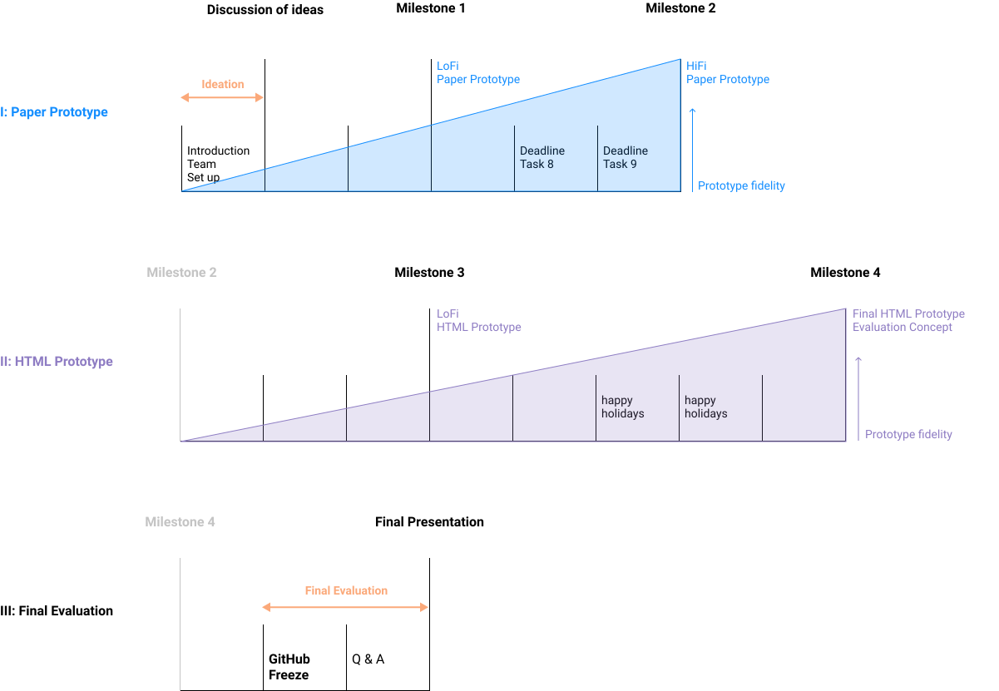

Iterations
Schedule
Summary
2020
- 03.09.20: Start of the Interaction Programming Block Course
- 15.10.20 14:00-16:00: Team assignment / Course introduction / Set up
- 22.10.20 14:00-16:00: Discussion of ideas
- 29.10.20 14:00-16:00: Group work
- 05.11.20 14:00-16:00: Deadline iteration 1 + milestone presentation 1
- 12.11.20 14:00-16:00: Group work
- 19.11.20 14:00-16:00: Deadline iteration 2 + milestone presentation 2
- 26.11.20 14:00-16:00: Group work
- 03.12.20 14:00-16:00: Group work
- 10.12.20 14:00-16:00: Deadline iteration 3 + milestone presentation 3
- 03.12.20 14:00-16:00: Group work
- 17.12.20 14:00-16:00: Group work
- 24.12.20 14:00-16:00: Group work
- 31.12.20 14:00-16:00: Group work
2021
- 07.01.21 14:00-16:00: Group work
- 14.01.21 14:00-16:00: Deadline iteration 4: milestone presentation 4
- 21.01.21 23:59:59 Freeze of GitHub: finalization of prototype
- 28.01.21 14:00-16:00: Questions & answers
- 04.02.21 14:00-16:00: Deadline final evaluation + final presentation